«Создаю причёски всем. И ВАМ! Даже если мы просто прошли друг мимо друга». Косы, афрокосы, канекалон, вплетения, окрашивание и сборы — двадцать с лишним лет у кресла.
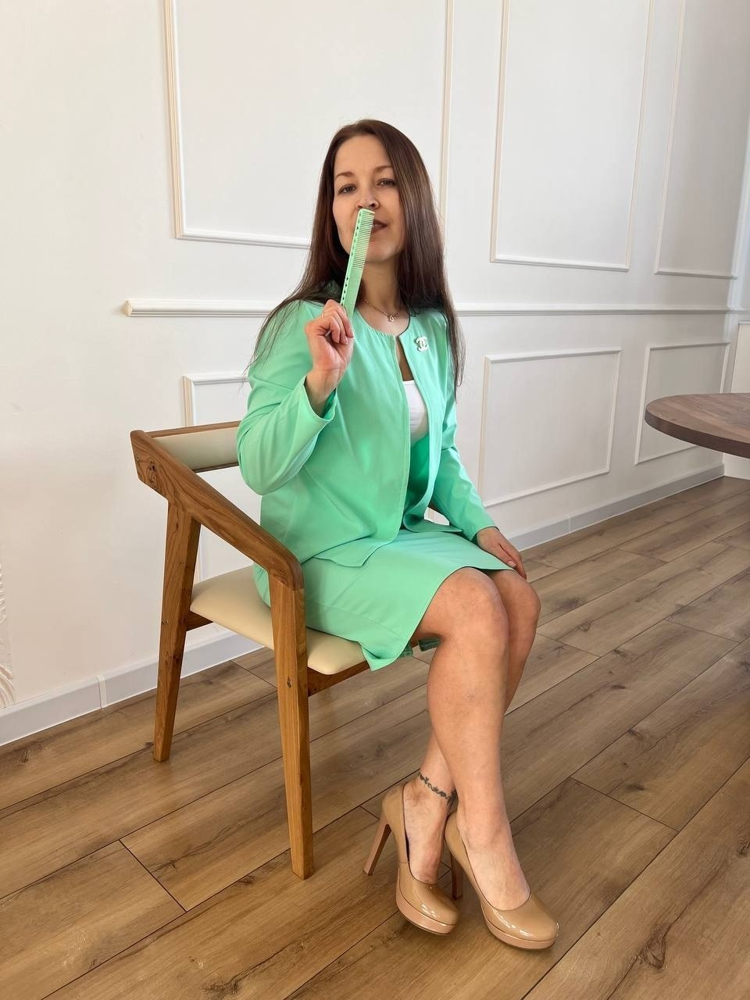
мастерАфрокосы, афрокудри, боксёрские и французские косы, дреды.
по записиЯркие вплёты, цветные прядки на кератине и на зажимах.
по записиСвадебные сборы, сборы на корпоратив, вечерние причёски, прикорневой объём.
по записиСложное окрашивание на органической линейке Tempting Erayba Marginal и Dr’Sorbie.
по записиОрганическое выпрямление и восстановление Dr’Sorbie, кератин, ботокс, полировка, уходы.
по записиКорейская завивка Juno hair, женская и мужская химзавивка.
по записиСтрижка с расчётом на то, как она будет отрастать.
от 2 000 ₽Мужская стрижка, стрижка бороды.
от 1 200 ₽Первая стрижка малыша и стрижки школьников.
по записиНаращивание и работа с уже нарощенными волосами.
по записиВ том же пространстве работают мастера по макияжу и маникюру.
по записиКонсультация по любым видам услуг.
бесплатноСтоимость работы зависит от длины, густоты волос и материалов и называется до начала работы. Цены не являются публичной офертой (ст. 437 ГК РФ).
«Доча проходила 26–27 дней. При том что каждый день была в воде», — Татьяна Банина.
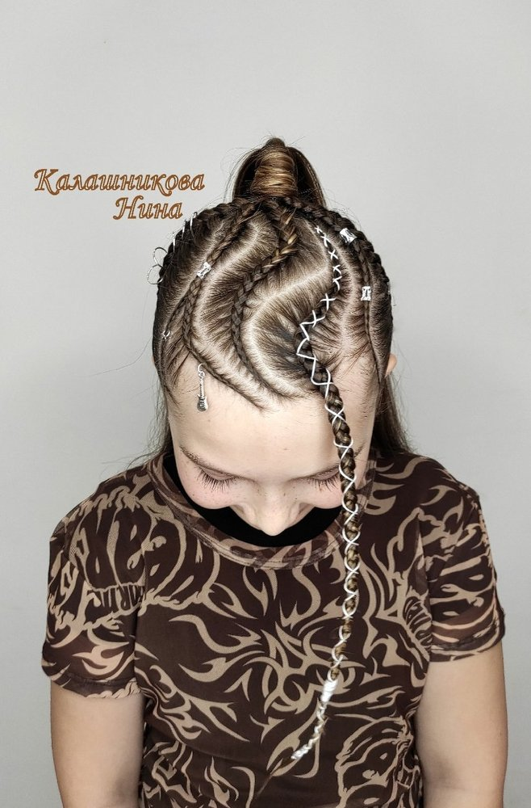
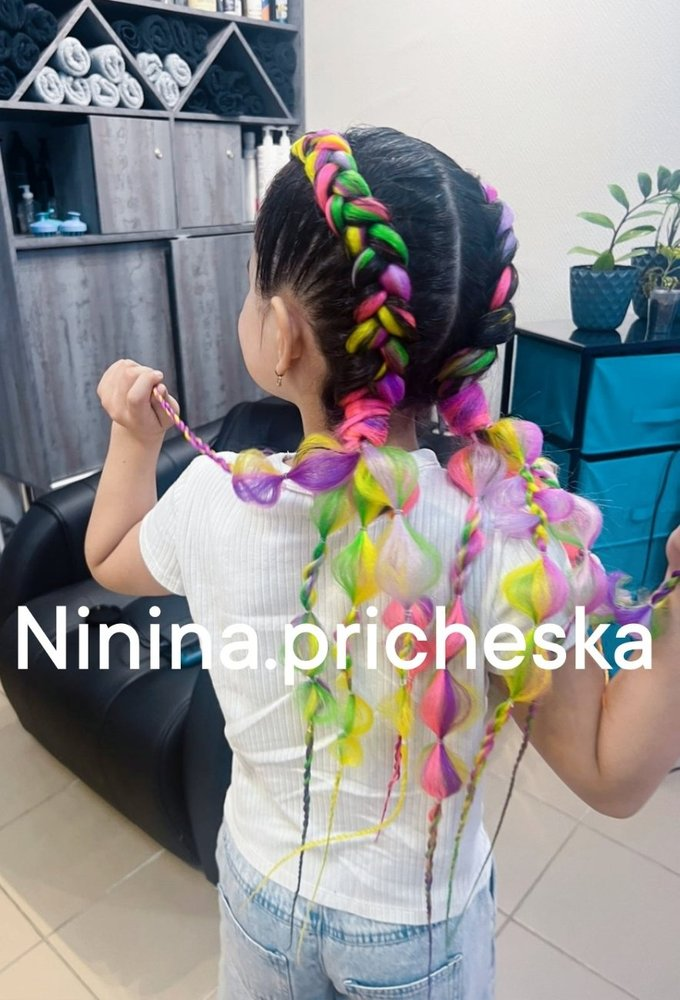
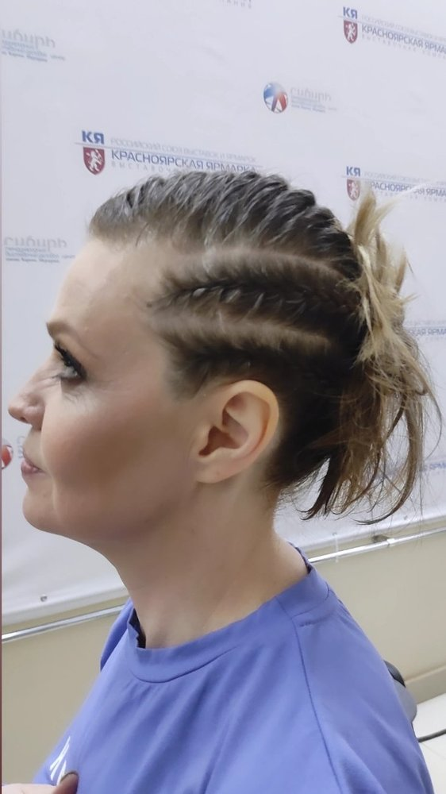
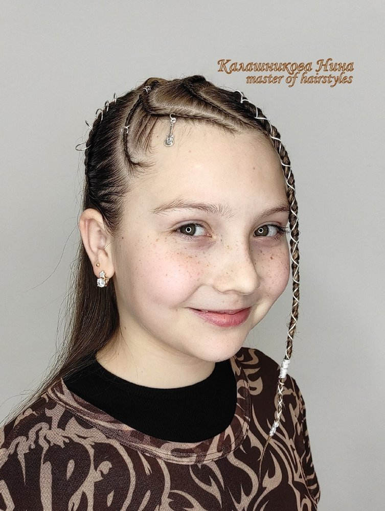
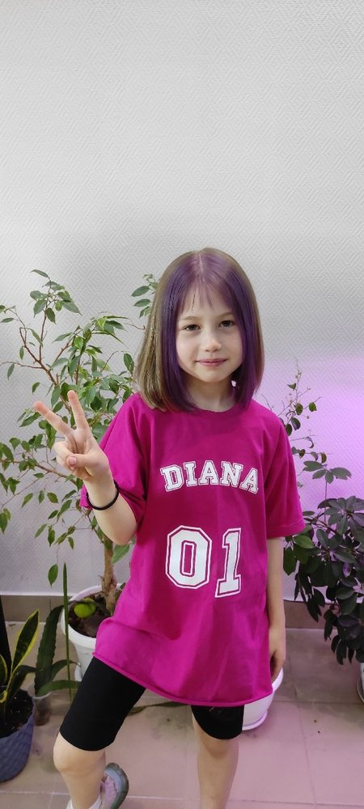
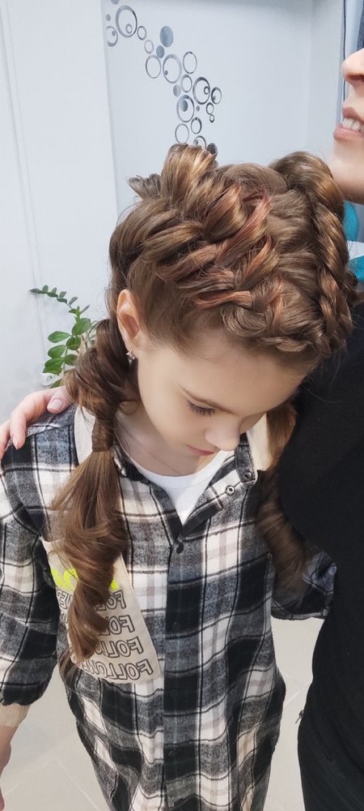
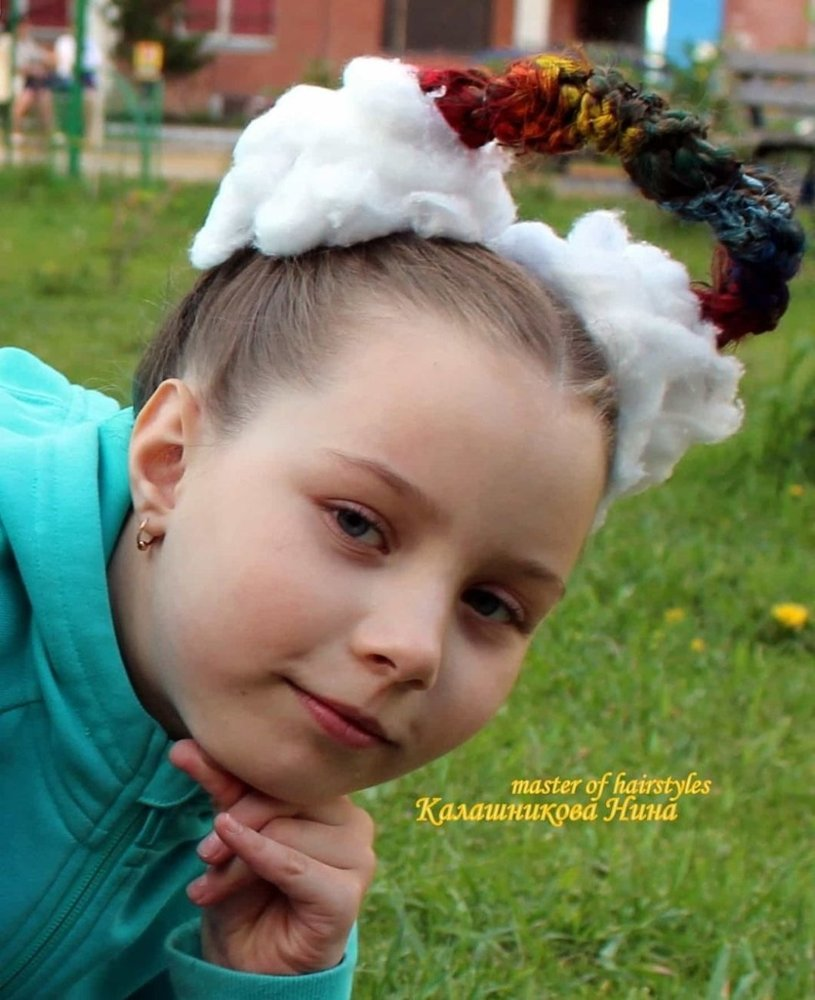
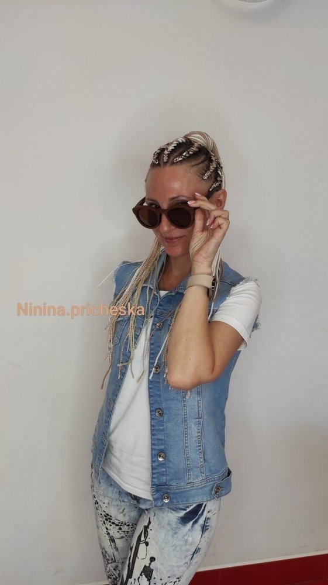
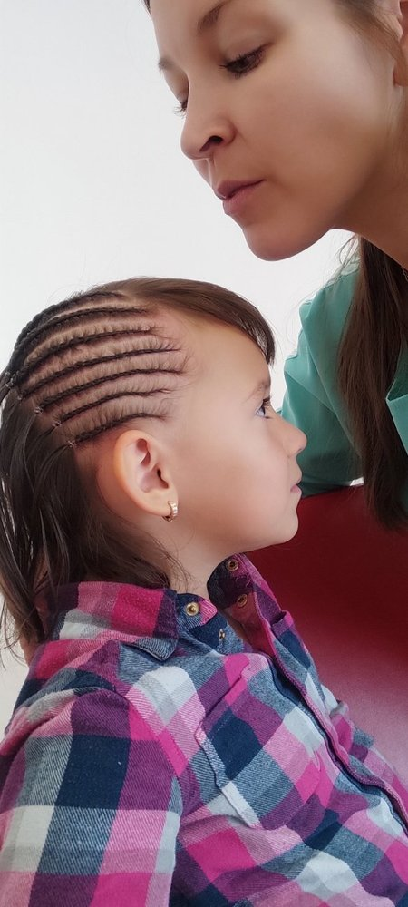
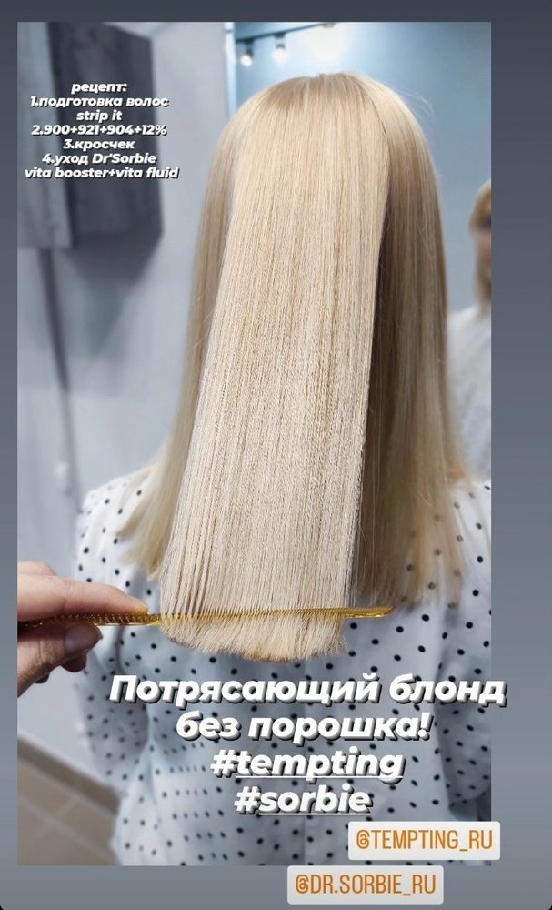
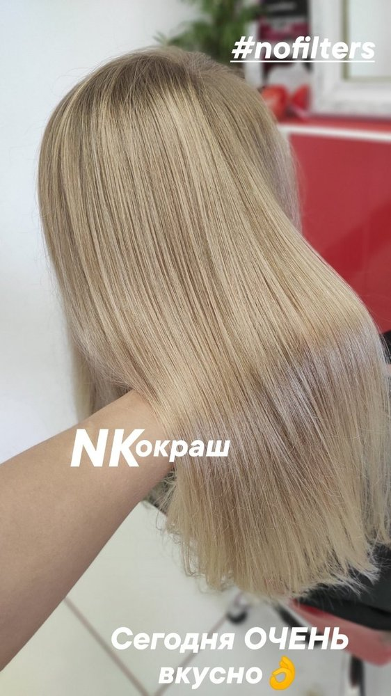
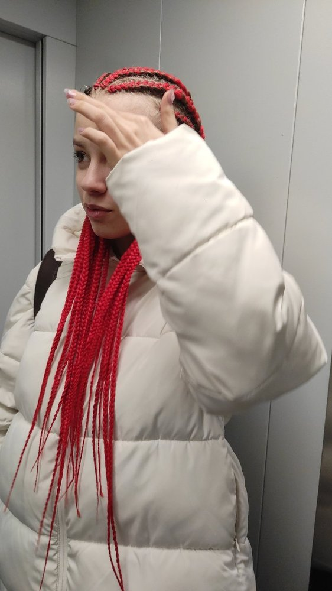
«Нина не простой рядовой мастер. Это человек с глубоким чувством прекрасного… Делая стрижку, она старается ещё и на будущее, чтоб всё отрастало красиво, плавно и долго».
«У меня очень тонкий волос, и сделать причёску красивой и простой в укладке мало кто умеет. Нина умеет. Косы плетёт сумасшедше крутые».
«Она сделала мне две французские косы, которые продержались три недели — и никаких неприятных ощущений. Спасибо и за сервис: чашечка кофе, конфетка, маленький презент с собой».
«Подстригла сегодня своего малышарика, 1 год 9 месяцев. Это была его первая стрижка. Всё прошло очень быстро и без слёз».
«Нина всегда даёт профессиональные советы по уходу за волосами. Всегда отличная мужская стрижка, быстро и недорого».
«Огромная благодарность Нине, дети безумно счастливы. Море позитивных эмоций и воплощение детских желаний».
Онлайн-записи у мастера нет. Позвоните или напишите — так быстрее всего.
Мастер: Нина Калашникова
Адрес оказания услуг: 660028, Красноярский край, г. Красноярск, ул. Ладо Кецховели, 34, 2 этаж
Телефон: +7 902 964-65-66
Режим работы: ежедневно с 07:30 до 22:00, по предварительной записи
Цены на сайте не являются публичной офертой (ст. 437 ГК РФ). Итоговая стоимость зависит от длины и состояния волос, объёма работы и материалов и называется мастером до начала работы. Сайт не собирает персональные данные: форм заявок нет, запись ведётся по телефону и в сообщениях.
Работу переносят или подбирают иначе, если есть:
Полный список ограничений мастер уточняет на консультации до записи. Сайт носит информационный характер.